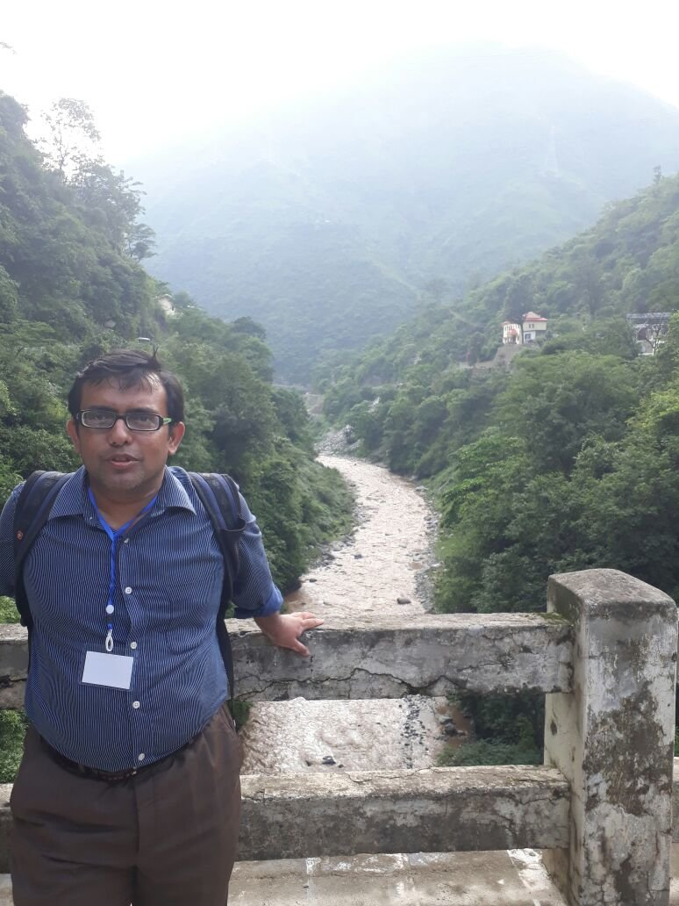

|  |
Dr. Souradyuti Paul Electrical Engineering and Computer Science (EECS) Department |
I am an associate professor in the department EECS of IIT Bhilai. Earlier, I used to work as an assistant professor of CSE at IIT Gandhinagar (Jul. 2014 - Oct. 17). I obtained BE, MTech and PhD degrees, respectively, from Jadavpur University (1994 - 98), Indian Statistical Institute (1999 - 01) and KU Leuven (2001 - 06). I spent a long span of time (about 14 years) working as a doctoral, postdoctoral and a guest researcher at various data security research groups in Europe, USA, and Canada, namely, COSIC, KU Leuven (2001 - 08), CSD, NIST, USA (2008 - 12) and CrySP, Univ. of Waterloo (2012 - 14). In addition to carrying out academic research in computer security, I was, in the past, directly involved with (and a major technical contributor to) two cryptographic standardization projects of global impact: ECRYPT-eSTREAM (organized by the European Union, 2005-2008) and SHA-3 (organized by NIST, Govt. of USA, 2007-2012). Currently, I lead multiple Indian initiatives (undertaken by the Bureau of Indian Standards) in standardizing Blockchain-based applications under various ISO projects.
 My
keynote talk at BIT, Durg, "Blockchains: Truth vs.
Hype"
My
keynote talk at BIT, Durg, "Blockchains: Truth vs.
Hype"
 This
winter semester (2018-19W), I am teaching CS554
Blockchain Technologies and CS254 Database Management Systems.
This
winter semester (2018-19W), I am teaching CS554
Blockchain Technologies and CS254 Database Management Systems.
Research Interests
(Present) Cryptographic modes and multiparty protocols; Blockchain
and Cryptocurrency; Anonymity and Privacy; Network Security.
(Recent past) Design and analysis of cryptographic primitives (e.g.
stream cipher, hash function, etc.).
Since 2001, my research has always centered on cryptography, data security and related areas.
Recent visits